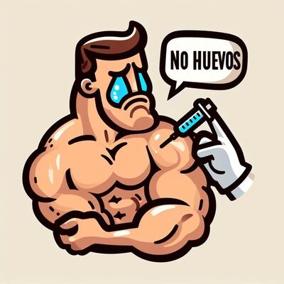
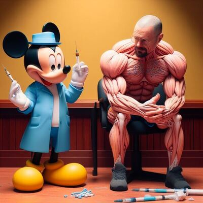

Peligro de los Esteroides y sus consecuencias
Publicado: (cada media hora)
Peligro de los Esteroides
Los esteroides anabólicos, a menudo utilizados en el mundo del fitness y el culturismo, pueden parecer una solución rápida para aumentar la masa muscular y mejorar el rendimiento, pero su uso conlleva graves riesgos para la salud.
Efectos Secundarios Peligrosos
El abuso de esteroides puede llevar a un desequilibrio hormonal en el cuerpo, lo que puede resultar en problemas como la ginecomastia (desarrollo de tejido mamario en los hombres) y la atrofia testicular. Además, el uso de esteroides puede aumentar el riesgo de enfermedades del corazón, presión arterial alta y colesterol elevado.
Consecuencias Legales y Éticas
Es importante destacar que el uso de esteroides anabólicos sin supervisión médica es ilegal en muchos países y puede llevar a sanciones legales. Además, su uso inadecuado puede poner en peligro tu salud y bienestar a largo plazo. En lugar de recurrir a los esteroides, es fundamental buscar un enfoque saludable y sostenible para el desarrollo muscular y el rendimiento atlético, que incluya una nutrición adecuada y un programa de ejercicios bien diseñado.
Asesoramiento Profesional
Si estás considerando el uso de esteroides, es crucial buscar el asesoramiento de un profesional de la salud antes de tomar cualquier decisión. El uso imprudente de estos compuestos puede tener consecuencias graves para tu salud y bienestar a largo plazo. La educación y la toma de decisiones informadas son fundamentales cuando se trata de la utilización de sustancias potencialmente peligrosas.
Explorando las Dualidades de los Esteroides: Una Encrucijada en el Fitness
Explorar las dualidades de los esteroides en el fitness es adentrarse en una encrucijada compleja y fascinante. Estas sustancias prometen rápidos avances musculares, pero plantean cuestiones éticas y de salud. Aunque son un atajo tentador hacia el éxito físico, las consecuencias para la salud son significativas. Este dilema plantea preguntas sobre la verdadera naturaleza del éxito en el fitness y cómo equilibrar objetivos ambiciosos con la integridad personal. En este recorrido por las dualidades de los esteroides, buscamos iniciar un diálogo reflexivo sobre decisiones informadas, responsabilidad personal y la búsqueda sostenible de la excelencia física en el gimnasio.